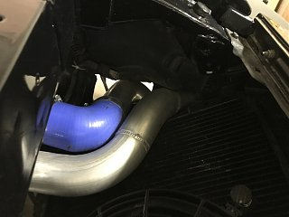

-
There was a thread on here years ago but the photos are gone as are most of the photos in the site. My set-up is with AC but both IC pipes end up running behind and up over the radiator. Seems like poor engineering to me and would like to correct it. It seems the heat coming off the fans is really defeating the purpose. The placement of the piping only leaves about 2" between the piping and rad which leaves me with dual fans that are undersized and not drawing enough air though the radiator. Wonder if there are photos of set-ups with AC and with the nose off?1986zxt w/ '86, 56k mile, na engine (turbo bits swapped), K&N intake, 3" CM Performance turbo-back exhaust, Eibachs, KYB shocks, Front Mount Intercooler (2.5" plumbing), Turbosmart MBC/9 lbs, recirculating BOV, ASCO plenum, dual fans, Maxima alt, Champion 3 row Radiator.
2013 Ford Taurus SHO Performance Package -
Some are archived here:
http://redz31.suomiz.net/turbofaq/intercoolers.html
*My setup is on there but I'm not running an intercooler atm.
84 AE/Shiro #683/Shiro #820/84 Turbo -
Thanks. there were a couple in the old thread I wanted to look at. Can't remember who they were. I think Neil86T was one.Last edited by 1986zxt; 09-05-2017, 01:52 PM.1986zxt w/ '86, 56k mile, na engine (turbo bits swapped), K&N intake, 3" CM Performance turbo-back exhaust, Eibachs, KYB shocks, Front Mount Intercooler (2.5" plumbing), Turbosmart MBC/9 lbs, recirculating BOV, ASCO plenum, dual fans, Maxima alt, Champion 3 row Radiator.
2013 Ford Taurus SHO Performance Package -
I once had an 86 Turbo with the Spearco 2-221 Intercooler Kit. That was the only kit I knew that cleared the A/C with no trouble other than custom intercooler piping. You could try Bell Intercoolers which custom made an IC for Jason, but be prepared to shell out a lot of money. I once called them and Turbonetics about making a custom IC kit similar to the Spearco one and they wanted over $1,000. With that said, I usually don't bother with an intercooler on 84-86 because you can run 10 psi on premium fuel due to the low compression ratio. Of course, it'd be nice NOT to have to put premium in it and save some pennies at the pump. BUT THEN AGAIN, I don't drive the car all that often so what does it matter? OH here I am rambling on again and most likely nobody fricken cares.
-
Here's my setup which kept the AC.2006 TR/R GTO M6 18s Stock
1986 MB & S/B Z31 300ZX Turbo 5spd Not Stock -
Is there any advantage to routing to the side of the radiator vs going over the top?--------------
Legal stuff:
**Nissan Employee**
Any information shared is simply my own opinion and NOT the opinion of Nissan
not legal stuff:
'88 300ZX 2+2-- driving… just details left
'22 Q60RS-- I tell the wife it's hers…
'87 Chaparral bowrider-- the next project
'00 Corolla-- kids car.
'14 E-350-- Gotta haul those kids in something. -
I would think a good bit of efficiency of the system would be lost. A fabricator intimated the intercooler to intake would be the primary concern and shielding the air intake from engine heat.1986zxt w/ '86, 56k mile, na engine (turbo bits swapped), K&N intake, 3" CM Performance turbo-back exhaust, Eibachs, KYB shocks, Front Mount Intercooler (2.5" plumbing), Turbosmart MBC/9 lbs, recirculating BOV, ASCO plenum, dual fans, Maxima alt, Champion 3 row Radiator.
2013 Ford Taurus SHO Performance Package -
There's simply more room staying low and going to the side. The hood to belt space becomes a problem when going high. The first version on mine was set up that way and I had problems with it pushing down onto the belt.Originally posted by mwolvinm View Post
2006 TR/R GTO M6 18s Stock
1986 MB & S/B Z31 300ZX Turbo 5spd Not Stock -
I used 2 1/4", I believe, piping. There was minor interference with the hood. I dimpled the support bracing of the hood where there was contact. Probably 3/8" diameter dimple. That gave me about 1/4" clearance over the belt.1986zxt w/ '86, 56k mile, na engine (turbo bits swapped), K&N intake, 3" CM Performance turbo-back exhaust, Eibachs, KYB shocks, Front Mount Intercooler (2.5" plumbing), Turbosmart MBC/9 lbs, recirculating BOV, ASCO plenum, dual fans, Maxima alt, Champion 3 row Radiator.
2013 Ford Taurus SHO Performance Package

Copyright © 2006–. All rights reserved. Privacy Policy